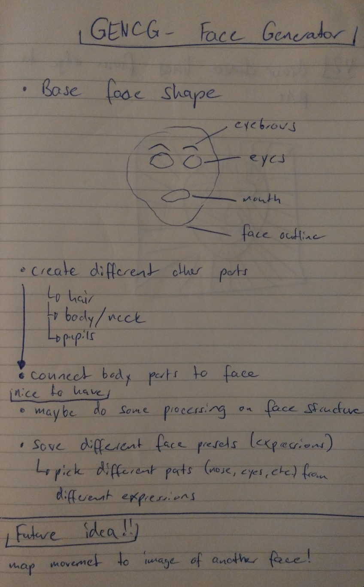
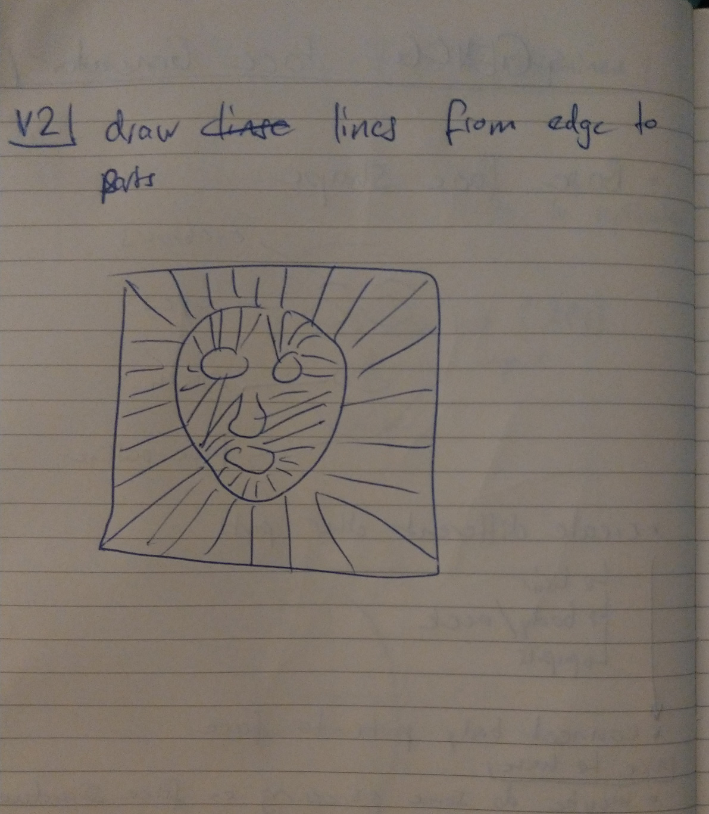
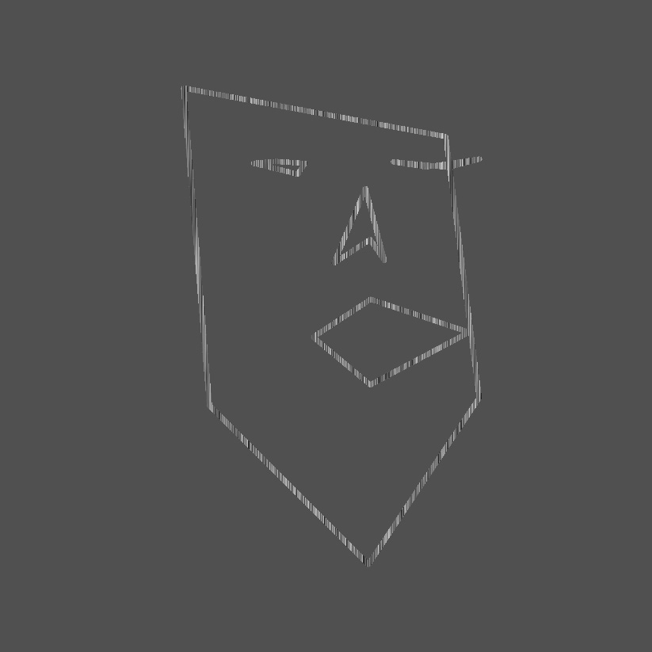
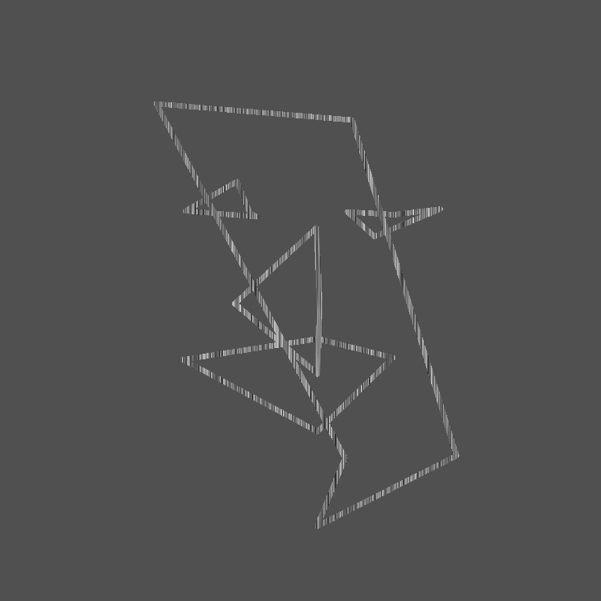
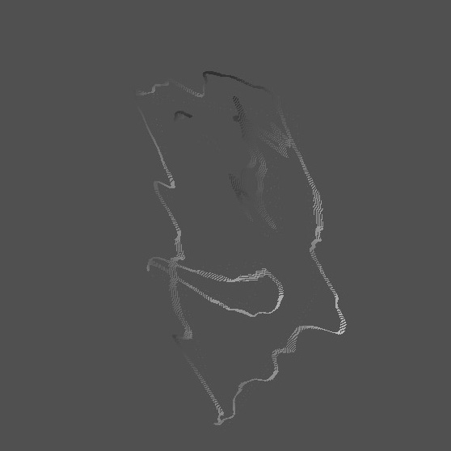

GENCG Working Journal - Day 5 - Face Generator


// indices to access points from different parts of the face
let outline = [
0, 1, 2, 3, 4, 5, 6, 7, 8, 9, 10, 11, 12, 13, 14, 15, 16, 26, 25, 24, 23, 22,
21, 20, 19, 18, 17,
];
let eyeLeft = [36, 37, 38, 39, 40, 41];
let eyeRight = [42, 43, 44, 45, 45, 47];
let nose = [27, 28, 29, 30, 31, 32, 33, 34, 35];
let mouthOuter = [48, 49, 50, 51, 52, 53, 54, 55, 56, 57, 58, 59];
let mouthInner = [60, 61, 62, 63, 64, 65, 66, 67];
// ...
// this for-loop connects all points from one part of the face
// the vertices array contains data points provided by the Mediapipe library
// connectionIndices represents an array of concrete indices as defined above
for (let i = 0; i < connectionIndices.length; i++) {
const vertexPoint = vertices[connectionIndices[i]];
curveVertex(vertexPoint[0], vertexPoint[1]);
}
Because of some scaling issues with iframes and the used tracking
library the drawn face might not be visible because it's drawn outside
the iframe! Try moving your head to the top right in that case.
The camera is flipped, on the camera you should be moving to the
top left, in reality you should be moving to the top right!
Also your PC might struggle on this page because the calculation through
mediapipe are quite heavy on your CPU. All sketches are embedded via
IFrame and are all loaded and processed simultaneously.
If you encounter too much lag, consider using the provided links to
the individual sketches!
Show me!
// input value for the noise function
let xOff = 0;
// looping over all pixels on the canvas
for (let x = 0; x < width; x++) {
for (let y = 0; y < height; y++) {
const i = (x + y * width) * 4;
let r = pixels[i + 0];
let g = pixels[i + 1];
let b = pixels[i + 2];
let a = pixels[i + 3];
let bright = brightness(color(r, g, b));
// only add the "sketch filter look" to bright pixels -> not the background
// because of antialiasing, choosing only pixels with brightness of 100 will cause some jittery look at the edges of a stroke
if (bright >= 40) {
// by using noise I achieve the sketchy look
let v = map(noise(xOff), 0, 1, 0, 255);
pixels[i + 0] = v;
pixels[i + 1] = v;
pixels[i + 2] = v;
}
xOff += 0.01;
}
}
updatePixels();


